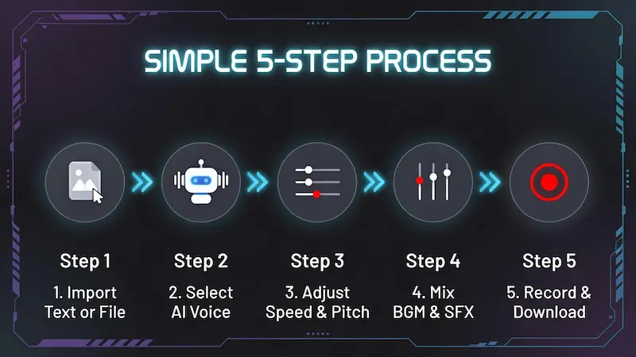
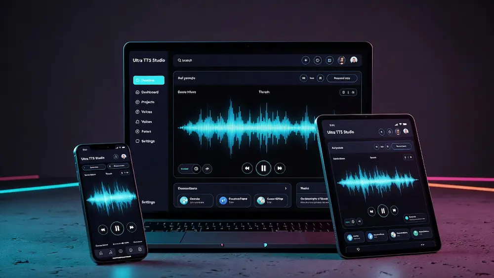

Ultra TTS Studio Pro
Convert Text, PDF & Images to Natural Audio. Unlimited. Private. Free.
Advanced Text to Speech & Audio Studio
Welcome to Trusted Tools Web's TTS Studio, the most advanced free online voice generator. Unlike basic text-to-speech tools, this studio allows you to convert not just text, but also PDF documents, eBooks, and Images (OCR) into natural-sounding audio. Whether you are a student listening to notes or a content creator making voiceovers, this tool works 100% offline in your browser, ensuring maximum privacy.
How to Use This Tool?

Follow these simple steps to generate professional audio:
- Step 1: Input Text or File — Type directly, or click "Import" to upload a PDF/DOCX file. Use "OCR" to extract text from images.
- Step 2: Select Voice — Choose your preferred language and voice accent from the "Voice Engine" panel.
- Step 3: Customize Audio — Adjust the Speed and Pitch sliders to match your requirements.
- Step 4: Add Effects — Use the Mixer to add Background Music (BGM) or Sound Effects (SFX) for a studio feel.
- Step 5: Record & Download — Click the REC button to capture the final audio mix (Voice + Music) and save it as a .webm file.
Device Support & System Requirements

Ultra TTS Studio is a powerful web application that pushes the limits of your browser. While we strive for universal support, some features rely on specific hardware capabilities.
✔ Best Experience: Google Chrome, Edge, or Brave browsers recommended. Everything works 100% — highest quality voices, full OCR support, and Studio Recorder works perfectly.
✔ Works Well: Excellent for Listening, PDF Reading, and Image-to-Text. ⚠ Note: Recording internal audio may vary due to Android security restrictions.
✔ Playback Only: Great for listening to articles or eBooks. ✖ Limitation: Recording and downloading mixed audio is restricted by Apple browsers.
Key Features
No character limits. Convert long articles or entire books without paying a penny.
Client-side processing means your sensitive documents never leave your device.
Built-in Tesseract engine extracts text from screenshots and scanned documents instantly.
Create dialogues using multiple voices in a single script using our unique tag system.
Perfect for Faceless YouTube Channels
Are you running a "Faceless" YouTube channel or a TikTok page? You don't need expensive microphones or voice actors anymore. Use this studio to generate clear, engaging narration for your scripts. With the built-in Background Music Mixer, you can produce a ready-to-upload audio track directly from your browser. Just type your script, add a little background music, and hit Record.
Study Hack: Listen 3× Faster
Reading long research papers or PDF assignments can be exhausting for your eyes. This tool lets you turn those documents into audio. The pro tip here is to use the Speed Slider. Many students train themselves to listen at 1.5× or 2.0× speed, allowing them to consume lecture notes and books in half the time. It's a massive productivity booster for exam preparation.
Accessibility for Dyslexia & Vision Impairment
We believe the internet should be accessible to everyone. For users who struggle with Dyslexia or have visual impairments, reading small text on a screen is difficult. Ultra TTS Studio acts as an assistive technology tool. By converting written web content or documents into speech, we help bridge the gap, making information easier to digest without the strain of reading.
Frequently Asked Questions (FAQ)
Is this Text-to-Speech tool free?Yes, Trusted Tools Web provides this utility 100% free of charge for unlimited use.
Can I use the audio for YouTube videos?Absolutely. The voices are generated using your browser's Web Speech API. However, check the individual license of the specific voice provider (Google/Microsoft) on your operating system for commercial use.
Disclaimer: This tool uses the native speech synthesis engines available on your device. We do not store any of your text or audio data on our servers.
Initializing secure discussion portal...